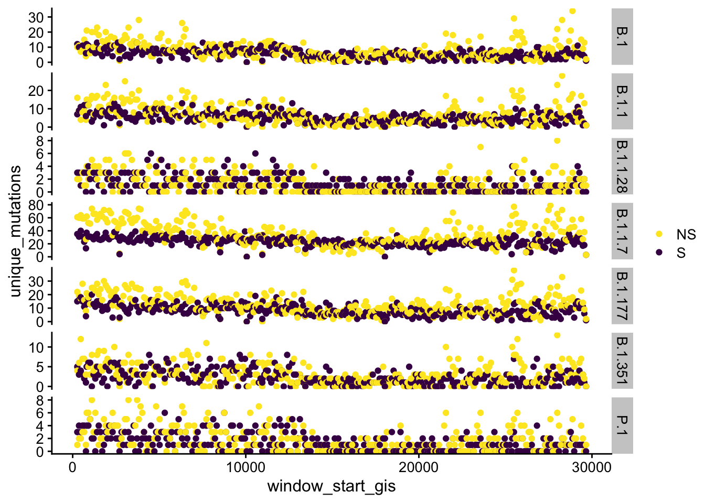
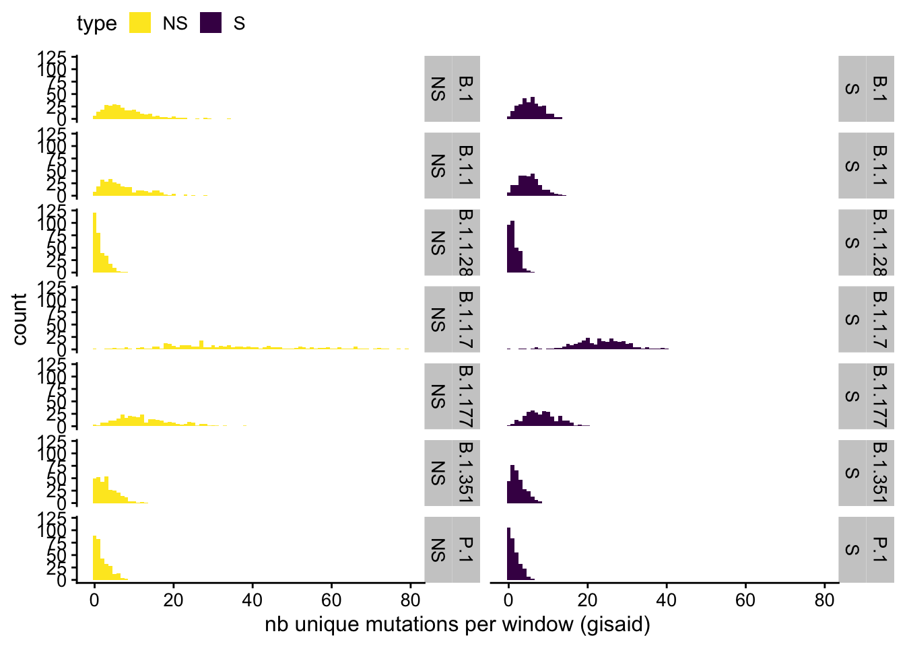

Last updated: 2021-07-01
Checks: 6 1
Knit directory: sars-cov2-gisaid/
This reproducible R Markdown analysis was created with workflowr (version 1.6.2). The Checks tab describes the reproducibility checks that were applied when the results were created. The Past versions tab lists the development history.
The R Markdown file has unstaged changes. To know which version of the R Markdown file created these results, you’ll want to first commit it to the Git repo. If you’re still working on the analysis, you can ignore this warning. When you’re finished, you can run wflow_publish to commit the R Markdown file and build the HTML.
Great job! The global environment was empty. Objects defined in the global environment can affect the analysis in your R Markdown file in unknown ways. For reproduciblity it’s best to always run the code in an empty environment.
The command set.seed(20210408) was run prior to running the code in the R Markdown file. Setting a seed ensures that any results that rely on randomness, e.g. subsampling or permutations, are reproducible.
Great job! Recording the operating system, R version, and package versions is critical for reproducibility.
Nice! There were no cached chunks for this analysis, so you can be confident that you successfully produced the results during this run.
Great job! Using relative paths to the files within your workflowr project makes it easier to run your code on other machines.
Great! You are using Git for version control. Tracking code development and connecting the code version to the results is critical for reproducibility.
The results in this page were generated with repository version 9c3698e. See the Past versions tab to see a history of the changes made to the R Markdown and HTML files.
Note that you need to be careful to ensure that all relevant files for the analysis have been committed to Git prior to generating the results (you can use wflow_publish or wflow_git_commit). workflowr only checks the R Markdown file, but you know if there are other scripts or data files that it depends on. Below is the status of the Git repository when the results were generated:
Ignored files:
Ignored: .DS_Store
Ignored: .Rhistory
Ignored: .Rproj.user/
Ignored: analysis/.Rhistory
Ignored: data/.DS_Store
Untracked files:
Untracked: analysis/1_working_with_the_data.snpeff.v2.gisaid_v2.0.rmd
Untracked: analysis/2_human_lineage_mutations.snpeff.v1.rmd
Untracked: analysis/hard_coded_params.R
Untracked: code/make_debug_miniature_dataset.R
Untracked: code/make_genome_positions.R
Untracked: data/2021-04-09/
Untracked: data/MutCounts_with_covariates.csv
Untracked: data/proteins_sarscov2_genome_positions.rds
Untracked: how_to_work_together.md
Untracked: output/README.html
Unstaged changes:
Modified: README.md
Modified: _workflowr.yml
Deleted: analysis/S0_creating_data_bywindows_lineages_OBSOLETE.Rmd
Modified: analysis/S0_creating_data_bywindows_lineages_byphase.Rmd
Modified: analysis/S1_adding_covariates_multiple_lineage_early_late.Rmd
Modified: analysis/S1_adding_covariates_multiple_lineage_period2.Rmd
Modified: analysis/S1_adding_covariates_multiple_lineage_period3.Rmd
Modified: analysis/S2_mutations_counts_covs_exploration_visuals.Rmd
Modified: analysis/S2_mutations_counts_covs_exploration_visuals_period2.Rmd
Modified: analysis/S2_mutations_counts_covs_exploration_visuals_period3.Rmd
Modified: analysis/S4_mutation_counts_models_period1.Rmd
Modified: analysis/S4_mutation_counts_models_period2.Rmd
Modified: analysis/S4_mutation_counts_models_period3.Rmd
Modified: analysis/_site.yml
Modified: analysis/about.Rmd
Modified: analysis/index.Rmd
Modified: code/README.md
Modified: data/README.md
Modified: output/README.md
Note that any generated files, e.g. HTML, png, CSS, etc., are not included in this status report because it is ok for generated content to have uncommitted changes.
These are the previous versions of the repository in which changes were made to the R Markdown (analysis/S1_adding_covariates_multiple_lineage_period3.Rmd) and HTML (docs/S1_adding_covariates_multiple_lineage_period3.html) files. If you’ve configured a remote Git repository (see ?wflow_git_remote), click on the hyperlinks in the table below to view the files as they were in that past version.
| File | Version | Author | Date | Message |
|---|---|---|---|---|
| Rmd | 9c3698e | tbata | 2021-06-30 | Added 100 nt windows for 3 periods on downsized 300k data. and update of all analysis |
# data_path <- "data/2021-06-18/"
source("analysis/hard_coded_params.R")data100 is an rds containing windows parsed from gisaid data parse using the S0 script susan_df is the original mut counts ( Angela’s) + covariates integration performed by Susan (see readme.rmd in /data)
Note currently the script is run twice on both early and late counts (rds objects)
suppressPackageStartupMessages(library(tidyverse)) # to avoid messy
library(cowplot)
data100 <- readRDS(file = "output/data_100pb_pangolin_period3.rds")
dim(data100)[1] 3768 7names(data100)[2] <- "gene"
head(data100)# A tibble: 6 x 7
# Groups: pangolin_lineage, gene, gene_bin [3]
pangolin_lineage gene gene_bin type unique_mutations max_genomes_mut…
<chr> <chr> <dbl> <fct> <int> <int>
1 B.1 E 1 Nons… 2 9
2 B.1 E 1 Syno… 5 18
3 B.1 E 2 Nons… 4 2
4 B.1 E 2 Syno… 4 4
5 B.1 E 3 Nons… 5 28
6 B.1 E 3 Syno… 4 6
# … with 1 more variable: window_start <dbl># covs parsed by susan ..
susan_df <-read_csv("data/MutCounts_with_covariates.csv")
names(susan_df) [1] "Protein" "Range" "Lineage" "protein.range"
[5] "N" "Type" "Count" "t.period"
[9] "W.R.dS" "W.G.dS" "R.G.dS" "ii.CD4"
[13] "ii.CD8" "ii.CD4.max" "ii.CD8.max" "ENC"
[17] "ENC_STD" "GC" "CAI" "CAI_STD"
[21] "PPI" "GO" "Prot.Dom" dim(susan_df)[1] 39296 23length(unique(susan_df$Lineage)) #32 Lineages [1] 3239296/(32*2) # check that 614 windows *2 (2 time periods) matches the total number of lines on the covs data organized by Susan [1] 614gene_positions_md <-readRDS("data/proteins_sarscov2_genome_positions.rds")
names(gene_positions_md)[1]<-"gene" #(to be consistent with data100)First reformatting data100 to match the ids of susan’s covariates info before joining : I use the protein.range as pivotal column to make joins
names(data100)[1] "pangolin_lineage" "gene" "gene_bin"
[4] "type" "unique_mutations" "max_genomes_mutated"
[7] "window_start" head(data100)# A tibble: 6 x 7
# Groups: pangolin_lineage, gene, gene_bin [3]
pangolin_lineage gene gene_bin type unique_mutations max_genomes_mut…
<chr> <chr> <dbl> <fct> <int> <int>
1 B.1 E 1 Nons… 2 9
2 B.1 E 1 Syno… 5 18
3 B.1 E 2 Nons… 4 2
4 B.1 E 2 Syno… 4 4
5 B.1 E 3 Nons… 5 28
6 B.1 E 3 Syno… 4 6
# … with 1 more variable: window_start <dbl>data100 <- data100 %>%
na.omit() %>%
mutate(protein.range = paste(gene,gene_bin,sep="."))
head(data100)# A tibble: 6 x 8
# Groups: pangolin_lineage, gene, gene_bin [3]
pangolin_lineage gene gene_bin type unique_mutations max_genomes_mut…
<chr> <chr> <dbl> <fct> <int> <int>
1 B.1 E 1 Nons… 2 9
2 B.1 E 1 Syno… 5 18
3 B.1 E 2 Nons… 4 2
4 B.1 E 2 Syno… 4 4
5 B.1 E 3 Nons… 5 28
6 B.1 E 3 Syno… 4 6
# … with 2 more variables: window_start <dbl>, protein.range <chr>We loop over lineage and aggregate covs from susan and then stitch data together … might need to explore if there is a faster way … right now it works fine
We first decide on the subset of lineages_to_merge: here we take the intersection between susan_df and data100 Later we can also choose all lineages in the data100 parse
lineages_to_merge <-unique(data100$pangolin_lineage)
lineages_to_merge[1][1] "B.1"(nLin <- length(lineages_to_merge))[1] 7Arbitrarily we use A.1 (note this is a weakness of our coding here as it assumes the presence of A.1 in the data)
susan_md <- susan_df %>%
filter(Lineage == "A.1") %>%
filter(t.period == 1)
susan_md <- susan_md[,c(4,6, 9:23)]
susan_md$Type <- as.factor(susan_md$Type)
names(susan_md) [1] "protein.range" "Type" "W.R.dS" "W.G.dS"
[5] "R.G.dS" "ii.CD4" "ii.CD8" "ii.CD4.max"
[9] "ii.CD8.max" "ENC" "ENC_STD" "GC"
[13] "CAI" "CAI_STD" "PPI" "GO"
[17] "Prot.Dom" names(susan_md)[2]<-"type"
names(susan_md) [1] "protein.range" "type" "W.R.dS" "W.G.dS"
[5] "R.G.dS" "ii.CD4" "ii.CD8" "ii.CD4.max"
[9] "ii.CD8.max" "ENC" "ENC_STD" "GC"
[13] "CAI" "CAI_STD" "PPI" "GO"
[17] "Prot.Dom" dim(susan_md)[1] 614 17summary(susan_md) protein.range type W.R.dS W.G.dS
Length:614 NS:307 Min. :0.02297 Min. :0.07715
Class :character S :307 1st Qu.:0.10137 1st Qu.:0.43180
Mode :character Median :0.15300 Median :0.58662
Mean :0.19768 Mean :0.74766
3rd Qu.:0.22812 3rd Qu.:0.75175
Max. :2.32798 Max. :4.00000
R.G.dS ii.CD4 ii.CD8 ii.CD4.max
Min. :0.06771 Min. :0.0000 Min. :0.0000 Min. :0.0000
1st Qu.:0.43401 1st Qu.:0.0075 1st Qu.:0.0218 1st Qu.:0.0450
Median :0.57826 Median :0.0352 Median :0.0749 Median :0.1372
Mean :0.76629 Mean :0.0745 Mean :0.0832 Mean :0.1849
3rd Qu.:0.72974 3rd Qu.:0.1198 3rd Qu.:0.1265 3rd Qu.:0.2047
Max. :4.00000 Max. :0.4238 Max. :0.2142 Max. :0.9030
NA's :490 NA's :490 NA's :490
ii.CD8.max ENC ENC_STD GC
Min. :0.0000 Min. :46.35 Min. :0.02975 Min. :28.45
1st Qu.:0.1157 1st Qu.:47.40 1st Qu.:0.06636 1st Qu.:35.97
Median :0.2518 Median :48.72 Median :0.07618 Median :37.48
Mean :0.2514 Mean :49.03 Mean :0.09679 Mean :38.09
3rd Qu.:0.4092 3rd Qu.:50.51 3rd Qu.:0.09836 3rd Qu.:38.76
Max. :0.5876 Max. :54.51 Max. :0.31083 Max. :48.52
NA's :490 NA's :28 NA's :28
CAI CAI_STD PPI GO
Min. :0.6369 Min. :0.000370 Min. : 2.00 Min. : 6.00
1st Qu.:0.7204 1st Qu.:0.000420 1st Qu.: 5.00 1st Qu.: 7.00
Median :0.7247 Median :0.000500 Median : 25.00 Median :10.00
Mean :0.7241 Mean :0.001858 Mean : 36.07 Mean :12.86
3rd Qu.:0.7320 3rd Qu.:0.000880 3rd Qu.: 37.00 3rd Qu.:17.00
Max. :0.7585 Max. :0.120500 Max. :303.00 Max. :25.00
NA's :268
Prot.Dom
Min. :1.00
1st Qu.:1.00
Median :2.00
Mean :3.15
3rd Qu.:4.00
Max. :9.00
NA's :2 data100_susansmd <- NULL
dim(data100_susansmd)NULLfor(mypangolin in lineages_to_merge) {
cat("Merging Lineage ", mypangolin)
gisaid_counts <- data100 %>%
filter(pangolin_lineage == mypangolin) %>%
mutate(type = fct_recode(type,"S"= "Synonymous substitutions", "NS"="Nonsynonymous substitutions"))
cat(mypangolin, " : ", dim(gisaid_counts)[1], " windows with non zero counts \n")
data100_annotated_wzeros<- susan_md %>%
left_join(gisaid_counts,by = c("type", "protein.range"))
data100_annotated_wzeros <- mutate(data100_annotated_wzeros,
pangolin_lineage = mypangolin) #forcing lineage name on NA
cat("After merging: ", dim(data100_annotated_wzeros)[1], " windows found (should have 614) \n")
data100_susansmd <- bind_rows(data100_susansmd,data100_annotated_wzeros)
}Merging Lineage B.1B.1 : 604 windows with non zero counts
After merging: 614 windows found (should have 614)
Merging Lineage B.1.1B.1.1 : 601 windows with non zero counts
After merging: 614 windows found (should have 614)
Merging Lineage B.1.1.28B.1.1.28 : 398 windows with non zero counts
After merging: 614 windows found (should have 614)
Merging Lineage B.1.1.7B.1.1.7 : 614 windows with non zero counts
After merging: 614 windows found (should have 614)
Merging Lineage B.1.177B.1.177 : 611 windows with non zero counts
After merging: 614 windows found (should have 614)
Merging Lineage B.1.351B.1.351 : 520 windows with non zero counts
After merging: 614 windows found (should have 614)
Merging Lineage P.1P.1 : 420 windows with non zero counts
After merging: 614 windows found (should have 614) dim(data100_susansmd)[1] 4298 23summary(data100_susansmd$unique_mutations) Min. 1st Qu. Median Mean 3rd Qu. Max. NA's
1.000 2.000 5.000 9.455 12.000 79.000 539 The merge generates various NAs for windows with zero counts in the gisaid data and these should be fixed: NA in counts -> 0 NA in max_genomes_mutated ->0 NA in window_start rebuild using gene structure
data100_susansmd <- data100_susansmd %>%
mutate(unique_mutations = ifelse(is.na(unique_mutations), 0, unique_mutations),
max_genomes_mutated = ifelse(is.na(max_genomes_mutated), 0, max_genomes_mutated))
# rebuilding gene and bins in gene
data100_susansmd <- data100_susansmd %>%
separate(col = protein.range , into = c("gene_name","gene_bin"))
get_windowstart <- function(my_gene, my_bin) {
thestart <- gene_positions_md$start_pos[which(gene_positions_md$gene == my_gene)]
return(thestart + 100*(as.numeric(my_bin)-1))
}
data100_susansmd <- data100_susansmd %>%
mutate(window_start_gis = unlist(map2(.f = get_windowstart,.x = gene_name, .y=gene_bin))) (dim(data100_susansmd)[1] /614) == nLin # check on 614 lines of obs per lineage[1] TRUEnames(data100_susansmd) [1] "gene_name" "gene_bin" "type"
[4] "W.R.dS" "W.G.dS" "R.G.dS"
[7] "ii.CD4" "ii.CD8" "ii.CD4.max"
[10] "ii.CD8.max" "ENC" "ENC_STD"
[13] "GC" "CAI" "CAI_STD"
[16] "PPI" "GO" "Prot.Dom"
[19] "pangolin_lineage" "gene" "unique_mutations"
[22] "max_genomes_mutated" "window_start" "window_start_gis" summary(data100_susansmd) gene_name gene_bin type W.R.dS
Length:4298 Length:4298 NS:2149 Min. :0.02297
Class :character Class :character S :2149 1st Qu.:0.10122
Mode :character Mode :character Median :0.15300
Mean :0.19768
3rd Qu.:0.22825
Max. :2.32798
W.G.dS R.G.dS ii.CD4 ii.CD8
Min. :0.07715 Min. :0.06771 Min. :0.000 Min. :0.000
1st Qu.:0.43086 1st Qu.:0.43382 1st Qu.:0.007 1st Qu.:0.022
Median :0.58662 Median :0.57826 Median :0.035 Median :0.075
Mean :0.74766 Mean :0.76629 Mean :0.075 Mean :0.083
3rd Qu.:0.75231 3rd Qu.:0.72985 3rd Qu.:0.120 3rd Qu.:0.127
Max. :4.00000 Max. :4.00000 Max. :0.424 Max. :0.214
NA's :3430 NA's :3430
ii.CD4.max ii.CD8.max ENC ENC_STD
Min. :0.000 Min. :0.000 Min. :46.35 Min. :0.02975
1st Qu.:0.045 1st Qu.:0.116 1st Qu.:47.40 1st Qu.:0.06636
Median :0.137 Median :0.252 Median :48.72 Median :0.07618
Mean :0.185 Mean :0.251 Mean :49.03 Mean :0.09679
3rd Qu.:0.205 3rd Qu.:0.409 3rd Qu.:50.51 3rd Qu.:0.09836
Max. :0.903 Max. :0.588 Max. :54.51 Max. :0.31083
NA's :3430 NA's :3430 NA's :196 NA's :196
GC CAI CAI_STD PPI
Min. :28.45 Min. :0.6369 Min. :0.000370 Min. : 2.00
1st Qu.:35.97 1st Qu.:0.7204 1st Qu.:0.000420 1st Qu.: 5.00
Median :37.48 Median :0.7247 Median :0.000500 Median : 25.00
Mean :38.09 Mean :0.7241 Mean :0.001858 Mean : 36.07
3rd Qu.:38.76 3rd Qu.:0.7320 3rd Qu.:0.000880 3rd Qu.: 37.00
Max. :48.52 Max. :0.7585 Max. :0.120500 Max. :303.00
GO Prot.Dom pangolin_lineage gene
Min. : 6.00 Min. :1.00 Length:4298 Length:4298
1st Qu.: 7.00 1st Qu.:1.00 Class :character Class :character
Median :10.00 Median :2.00 Mode :character Mode :character
Mean :12.86 Mean :3.15
3rd Qu.:17.00 3rd Qu.:4.00
Max. :25.00 Max. :9.00
NA's :1876 NA's :14
unique_mutations max_genomes_mutated window_start window_start_gis
Min. : 0.00 Min. : 0.0 Min. : 250 Min. : 266
1st Qu.: 1.00 1st Qu.: 3.0 1st Qu.: 7055 1st Qu.: 7720
Median : 4.00 Median : 11.0 Median :13930 Median :14842
Mean : 8.27 Mean : 723.1 Mean :14574 Mean :14981
3rd Qu.:10.00 3rd Qu.: 42.0 3rd Qu.:22200 3rd Qu.:22363
Max. :79.00 Max. :167604.0 Max. :29600 Max. :29658
NA's :539 WE save the data100_susansmd as RDS object
# saveRDS(data100_susansmd, "data_100pb_early_withCovs.rds")
saveRDS(data100_susansmd, "output/data_100pb_pangolin_period3_withCovs.rds")reading from rds as a check
counts_annotated <- readRDS("output/data_100pb_pangolin_period3_withCovs.rds")
dim(counts_annotated)[1] 4298 24names(counts_annotated) [1] "gene_name" "gene_bin" "type"
[4] "W.R.dS" "W.G.dS" "R.G.dS"
[7] "ii.CD4" "ii.CD8" "ii.CD4.max"
[10] "ii.CD8.max" "ENC" "ENC_STD"
[13] "GC" "CAI" "CAI_STD"
[16] "PPI" "GO" "Prot.Dom"
[19] "pangolin_lineage" "gene" "unique_mutations"
[22] "max_genomes_mutated" "window_start" "window_start_gis" ggplot(data = counts_annotated,
aes(x = window_start_gis, y = unique_mutations,
color = type))+
geom_point()+
facet_wrap(~pangolin_lineage, ncol = 1, scales = "free_y", strip.position = "right")+
theme(legend.position = "top")+
theme_cowplot(font_size = 12)+
scale_colour_viridis_d(name="", direction = -1)+
NULL
ggplot(data = counts_annotated,
aes(x =unique_mutations, fill = type))+
geom_histogram(binwidth = 1)+
facet_wrap(~ pangolin_lineage + type, ncol = 2, strip.position = "right")+
theme_minimal(base_size = 15)+
xlab("nb unique mutations per window (gisaid)")+
scale_fill_viridis_d(direction = -1)+
theme_cowplot(font_size = 12)+
theme(legend.position = "top")+
NULL
sessionInfo()R version 4.0.2 (2020-06-22)
Platform: x86_64-apple-darwin17.0 (64-bit)
Running under: macOS Catalina 10.15.7
Matrix products: default
BLAS: /Library/Frameworks/R.framework/Versions/4.0/Resources/lib/libRblas.dylib
LAPACK: /Library/Frameworks/R.framework/Versions/4.0/Resources/lib/libRlapack.dylib
locale:
[1] en_US.UTF-8/en_US.UTF-8/en_US.UTF-8/C/en_US.UTF-8/en_US.UTF-8
attached base packages:
[1] stats graphics grDevices utils datasets methods base
other attached packages:
[1] cowplot_1.1.0 forcats_0.5.0 stringr_1.4.0 dplyr_1.0.2
[5] purrr_0.3.4 readr_1.3.1 tidyr_1.1.1 tibble_3.0.3
[9] ggplot2_3.3.2 tidyverse_1.3.0 workflowr_1.6.2
loaded via a namespace (and not attached):
[1] tidyselect_1.1.0 xfun_0.16 haven_2.3.1 colorspace_1.4-1
[5] vctrs_0.3.2 generics_0.0.2 viridisLite_0.4.0 htmltools_0.5.0
[9] yaml_2.2.1 utf8_1.1.4 blob_1.2.1 rlang_0.4.7
[13] later_1.1.0.1 pillar_1.4.6 withr_2.2.0 glue_1.4.1
[17] DBI_1.1.0 dbplyr_1.4.4 modelr_0.1.8 readxl_1.3.1
[21] lifecycle_0.2.0 munsell_0.5.0 gtable_0.3.0 cellranger_1.1.0
[25] rvest_0.3.6 evaluate_0.14 labeling_0.3 knitr_1.29
[29] httpuv_1.5.4 fansi_0.4.1 broom_0.7.0 Rcpp_1.0.5
[33] promises_1.1.1 backports_1.1.9 scales_1.1.1 jsonlite_1.7.1
[37] farver_2.0.3 fs_1.5.0 hms_0.5.3 digest_0.6.25
[41] stringi_1.4.6 rprojroot_2.0.2 grid_4.0.2 cli_2.0.2
[45] tools_4.0.2 magrittr_1.5 crayon_1.3.4 whisker_0.4
[49] pkgconfig_2.0.3 ellipsis_0.3.1 xml2_1.3.2 reprex_0.3.0
[53] lubridate_1.7.9 assertthat_0.2.1 rmarkdown_2.3 httr_1.4.2
[57] rstudioapi_0.11 R6_2.4.1 git2r_0.27.1 compiler_4.0.2